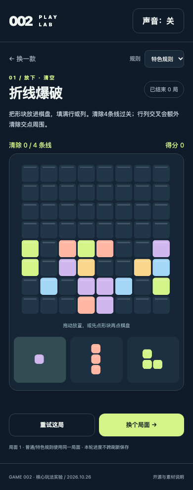
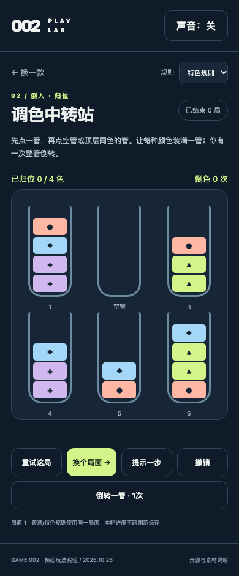
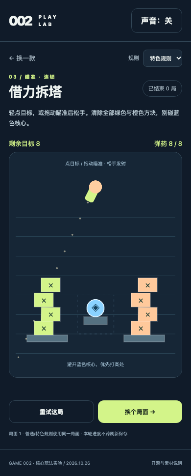

PARTIAL · HUMAN_GAMEPLAY_PENDINGGAME 002：三款核心玩法，玩过再决定。
2026-10-26 · 59款去重产品 / 8个平台与市场 / 18组机制拆解 / 10方向比较
打开统一试玩入口 ↗完整报告三个评审问题文件与证据清单
现在需要的是Human实际体验。技术测试已能走完循环，尚未证明有人愿意主动再来十局。不要因自动化全部赢局就投入正式美术或广告。可以全部淘汰。
01 折线爆破
摆块填满行列。特色规则让交叉清除触发交点周围余波，改变留空与交叉布局。
直接玩 →
录屏：真实自动化触控十局；默认静音，非概念动画。
02 调色中转站
倒管整理同色。一次整管倒转让埋藏色直接暴露，可与普通规则同局面对比。
直接玩 →
MIT纯规则移植后已再做十局触控复核。生成器/特色规则另行实现。
03 借力拆塔
瞄准方块引起碰撞与散落；特色规则要求保护蓝色核心，不能只追求清空。
直接玩 →
晚飞弹结算修正后十局真实触控记录；仍可能被Human判定重复。
已验证到哪里
| 项目 | 结果 | 边界 |
|---|
| 核心规则与公平性 | 12项通过；400排序种子；200反向见证；100发牌顺序；15拆塔布局 | 证明有合法解/输入，不证明重玩吸引力 |
| 实际输入 | 三款各十局触控完成；拆塔/排序改动后各另十局 | Chromium手机仿真，未做真机/TapTap宿主 |
| 浏览器 | 360/390/430/1280无横溢出；WebKit三款启动渲染通过 | WebKit不是同等十局全流程 |
| 开源 | 10block MIT规则、vp125 MIT纯规则移植、Matter.js MIT引擎 | 无许可排序项目只隔离运行，不复制资产/代码 |
| 旧项目与资源 | GAME001受检17,783文件/HEAD/status不变；任务orphan=0 | 源资产等排除依赖/旧构建；远端预览有意保留 |
研究证据不能越界
15个商业游戏入口的尝试存在大量加载失败，不能写成15款试玩成功。18组拆解多数依据官方明示规则；两款官方预览仅抽帧核对。榜单、评分、累计安装、热度、活跃和收入保留各自口径。未知值均为UNKNOWN。
59款数据 CSV市场范围机制拆解与证据等级10方向与淘汰理由源码与许可商业验证下一步
Human怎么比较
各玩几局，再尝试到十局。看第一步是否自然、失误能否解释、操作是否顺手、每次动作是否有反馈、失败后是否主动重试。用同一局面的普通/特色规则判断新增规则有没有价值。体验判断可在入口页本机记录并导出，没有远程采集。
GitHub远端交接与ZIP下载 →